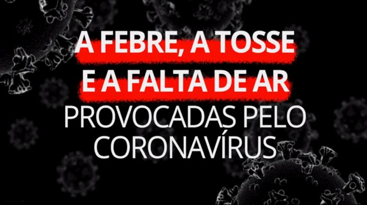
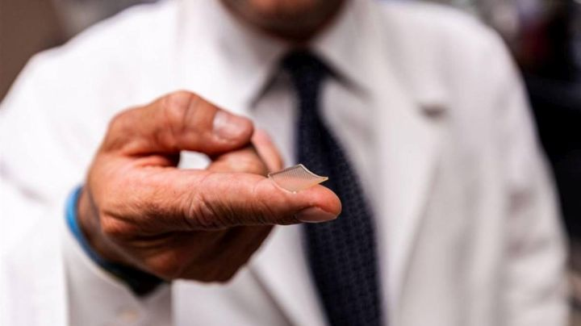

COVID-19
Saiba mais sobre...
COVID-19
Estrutura molecular da célula

Reportagem 1:
Coronavírus: como são a febre, a tosse e a falta de ar

Reportagem 3:
Pesquisadores nos EUA têm sucesso com testes de vacina contra Covid-19 em animais
Reportagem 5:
Em SP, números de prefeitura, estado e fila de testes de covid-19 não batem